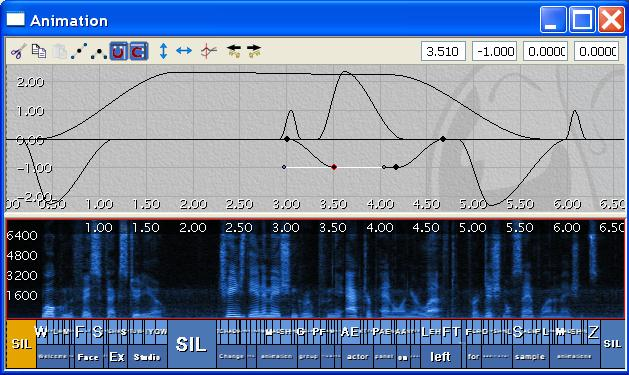

UDN
Search public documentation:
IntroductionToFaceFX
日本語訳
中国翻译
한국어
Interested in the Unreal Engine?
Visit the Unreal Technology site.
Looking for jobs and company info?
Check out the Epic games site.
Questions about support via UDN?
Contact the UDN Staff
中国翻译
한국어
Interested in the Unreal Engine?
Visit the Unreal Technology site.
Looking for jobs and company info?
Check out the Epic games site.
Questions about support via UDN?
Contact the UDN Staff
UE3 Home > FaceFX Facial Animation > Introduction to FaceFX
Introduction to FaceFX
Overview
Installing and Launching the Plug-ins
Deleting FaceFX Assets
 From the AnimSet Editor, go to the Mesh Tab and find the FaceFX Asset. Hit the "Clear All Text" Button.
If there are any FaceFX animation sets that referece the FaceFX asset, you must also dereference them by right-clicking on them, selecting properties, and deleting all text from the DefaultFaceFXAsset field.
Now you should be able to delete the Slade FaceFX Asset. Make sure FaceFX Studio is closed before doing this or UnrealEd will crash. From the Generic Browser in the OC3_Slade package, right-click on the OC3_Slade_AMesh_FaceFX FaceFX Asset and select Delete. If you get an error saying that the FaceFX Asset is still in use and referenced by the TransBuffer, you may need to save everything and restart the editor before you can delete the FaceFX Asset. Save the package when you have successfully deleted the FaceFX Asset.
From the AnimSet Editor, go to the Mesh Tab and find the FaceFX Asset. Hit the "Clear All Text" Button.
If there are any FaceFX animation sets that referece the FaceFX asset, you must also dereference them by right-clicking on them, selecting properties, and deleting all text from the DefaultFaceFXAsset field.
Now you should be able to delete the Slade FaceFX Asset. Make sure FaceFX Studio is closed before doing this or UnrealEd will crash. From the Generic Browser in the OC3_Slade package, right-click on the OC3_Slade_AMesh_FaceFX FaceFX Asset and select Delete. If you get an error saying that the FaceFX Asset is still in use and referenced by the TransBuffer, you may need to save everything and restart the editor before you can delete the FaceFX Asset. Save the package when you have successfully deleted the FaceFX Asset.
Creating an FXA File from the Plug-ins
- Open the Slade sample Max or Maya file found in the below attachment and launch the FaceFX plugin.
- Go to the frame that contains your FaceFX "Reference Pose." In most cases, this will be your skeletons bind pose. In Slade, go to frame 0.
- Select all of the bones you want FaceFX to control. For Slade, select all of the bones. Export your reference pose by clicking on the "Export" button in the Reference Pose section of the plugin.
- Batch export all of Slade's poses by clicking on the "Batch Export" button.
- Select the Slade-Batch-Export.txt file included in the attachment below.
- Save your FXA file.
Useful Links
UnrealEd Setup
Creating a FaceFX asset in UnrealEd
Now you need to create a new FaceFX Asset for the Slade skeletal mesh in the OC3_Slade package. Right-click on Slade's skeletal mesh, and select "Create New FaceFX Asset". If you are using Max, you will not be able to use the skeletal mesh that exists in the OC3_Slade package and you will need to create your own. The textures are identical.Importing an FXA file into UnrealEd
Next import the FXA file you created from the Max or Maya Plugin. Right-click on the newly generated FaceFX asset and select "Import from .FXA".Launching FaceFX from UnrealEd
Now you can launch FaceFX Studio from inside of UnrealEd. Right-click on the FaceFX Asset and select "Edit Using FaceFX Studio".Working with FaceFX
Create Mapping
Go to the FaceFX Mapping tab. Slade uses the default mapping, which can be created by clicking on the "New Default Mapping" button at the top of the Mapping tab. The Mapping tells FaceFX what curves to create when it recognizes a particular phoneme. You can create any sort of Mapping you want, but the default mapping is a good example of a target-based mapping that gives you enough poses to realistically move the lips and tongue for a character.Face Graph Setup
If you look at the Face Graph tab, you can see the list of bone poses exported from Max or Maya. Some of the bone poses exported from Max and Maya have names that correspond to the names of the targets in the default mapping. When you analyze an audio file with FaceFX, curves will be created for these targets and Slade will lip-synch to the WAV file. The Face Graph is capable of very complex relationships however, and creating new combiner nodes and links in the Face Graph will allow you to create very complex behaviors that are easy to animate. To set up Slade's sample Face Graph setup, you can run the Slade-Face-Graph-Setup.fxl batch script included in the attachment below. It will issue all of the commands necessary to setup the Face Graph. Simply copy this file to your C:\ directory and issue the following command from the FaceFX command line: exec -f "C:\Slade-Face-Graph-Setup.fxl" If you go to the Console tab, you can see that all of the commands in the batch script were executed and logged to the Console tab. Only the most recent commands can be seen in the Console tab, so for a full log of your session, check the Binaries\FaceFX\Logs\FaceFxStudioLog.html file. This file can be very helpful for debugging problems, so if you experience any issues using FaceFX, please copy and rename the log file before starting FaceFX again so the log is not deleted.
Another way to get Slade's Face Graph set up is to sync to a template file (*.FXT). Templates allow you to copy the Face Graph, node groups, mapping, camera (not supported yet) and workspace information from one actor to another. From FaceFX you can export and import a template file from the Actor menu.
If you go to the Console tab, you can see that all of the commands in the batch script were executed and logged to the Console tab. Only the most recent commands can be seen in the Console tab, so for a full log of your session, check the Binaries\FaceFX\Logs\FaceFxStudioLog.html file. This file can be very helpful for debugging problems, so if you experience any issues using FaceFX, please copy and rename the log file before starting FaceFX again so the log is not deleted.
Another way to get Slade's Face Graph set up is to sync to a template file (*.FXT). Templates allow you to copy the Face Graph, node groups, mapping, camera (not supported yet) and workspace information from one actor to another. From FaceFX you can export and import a template file from the Actor menu.
Generating Animations
Now you are ready to generate some animations for Slade. The Face Graph will not only receive values for the targets in your mapping, but it will also rotate Slade's head to emphasize certain words and create blink and eyebrow curves. Much of the complexity of Slade's Face Graph is designed to realistically move Slade's eyelids and eyes as he moves his head about. For a simpler face graph, check out the Slade-Simple example included in the attached zip file below. To generate an animation, make sure you have first imported the sound asset and sound cue you want to analyze into UnrealEd. The welcome sound file is already present in the OC3_Slade package, so we will analyze that file as an example. Select the welcomeCue asset in the OC3_Slade package so you can access it in the steps below. Then from the FaceFX Browser, click on the Animation Manager button at the top of the application. From the Animation Manager, click on the "Create Animation..." button at the bottom. The steps to the wizard are explained below:- Assuming you want FaceFX to automatically generate curves for your animation, leave the default selected in the first page of the wizard. To hand animate from scratch, you can select "Do not generate curves" and optionally import an audio file. For silent animations, leave the "Use Sound Cue" checkbox unchecked.
- The welcomeCue sound asset should already be selected because it was selected before you started generating the animation. Click Next.
- The welcome sound file is the only one present in the welcomCue and it should be selected. Click Next.
- Next you can specify an English text file to help FaceFX analyze the audio correctly. Text files can use "text tags" to generate curves in sync with specific words to drive other nodes your Face Graph. Use the following text to create a curve for "Gaze Left and Right" in addition to the speech target, blink, eyebrow, and head movement curves:
- Welcome to Face Ef Ex Studio. Change the animation group from ["Gaze Left and Right" v2= -1 v3=-1 easein=.5 easeout=.5] the actor panel [/"Gaze Left and Right"] on your left for additional sample animations.
- The next dialog allows you to select the language you want to analyze with along with the co-articulation and gesture configuration files you want to use. These configuration files can be found in the Binaries\FaceFX\Configs directory. Use the default setup and click Next.
- Finally, name your animation and click Finish.
Previewing Animations
Now that you have an animation loaded, you can watch it from the Preview tab. The Preview tab contains a UE3 viewport along with sliders on the right that can be in Animation, Combiner or Mapping mode. To watch your animation, select it from the "Animations" dropdown in the Actor Panel on the left. Then click the play button at the bottom left of the application. Notice that Slade moves his head to look at the Actor Panel because of the text tag that was added.Curve Properties
Notice in the Animation dropdown of the Actor Panel that all of the curves in the animation have a weaveform icon except for the "Gaze_Left_and_Right" curve. The curves with the waveform icon are "owned by analysis" and they can not be modified from the curve editor or the sliders until you make them "owned by the user" by right-clicking on them and changing their properties. Curves "owned by analysis" will be automatically regenerated every time you move a phoneme in the phoneme bar. Managing/Moving Animations
So any anims that are directly inside the FaceFXAsset will be loaded all the time. Even if they are for a different level. So the best way is to make a bunch of FaceFX AnimSets (e.g. one for each matinee, one for each level's dialog). Then you can mount them via the Kismet action. How to move Animations around to new AnimSets:- Right click the FaceFX Asset and choose: "Create new FaceFX AnimSet" (This links that AnimSet to that FaceFXAsset
- Open the New FaceFX AnimSet
- Actor->Animation Manager
- Now you should see the group you made in the drop downs
- Put the new group in the Secondary Pane
- Put the group you want to move animations from in the Primary pane
- Select the animations and then click on Move button to move them
- Prepare to wait if you are moving lots of anims (e.g. 1-2 thousand will take some time :-) )
Getting More Information
- The UE3 version of FaceFX uses a UE3 viewport and therefore does not use the FaceFX Sample rendering engine or the FXR file format
- The UE3 version does not output FXS files to store audio, phoneme lists, etc. All of this data is stored in the FaceFX Asset which is integrated with the UE3 package system.
- The UE3 version of FaceFX uses custom Unreal node types in addition to the standard FxCombinerNode, FxBonePoseNode, FxDeltaNode, and FxCurrentTimeNode. The custom Unreal node types are FUnrealFaceFXMorphNode and FUnrealFaceFXMaterialParameterNode. Check the more advanced FaceFX Tutorials for how to use these nodes.
Downloads
- Download the sample content used in this document.
- Download the FaceFX_Documentation (1.7.3.1) documentation as a zip.
- Download the FaceFX Documentation (1.7.3.1) documentation as a CHM.
- Download a video tutorial demonstrating the Face Graph.